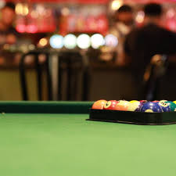

Aman Singh was born and raised in Centurion.
He is studying BIT Information Systems.
He did IT in highschool and fell in love with it, studying Information Systems became a natural choice
He took information science as the elective stream

Aman likes playing pool, a game he enjoys for its mix of skill, strategy, and relaxation.
Whether it's a friendly match with friends or practicing his shots,
pool has become a fun way for him to unwind and challenge himself.
He appreciates the precision and focus the game requires, which keeps him engaged each time he plays.
Driving is also a hobby to him. He enjoys the freedom and sense of adventure that comes with being on the road,
whether it’s taking scenic drives or discovering new places.
The thrill of driving, especially when exploring unfamiliar routes, provides him with a sense of peace and independence.
It’s a way for him to clear his mind, listen to music, and embrace the simple joy of being behind the wheel.
| Modules Semester 1 | Modules Semester 2 |
|---|---|
| INF 272 | INF 272 |
| INF 271 | INF 271 |
| INF 214 | INF 225 |
| FIL 251 | inf 261 |
| INL 210 | INL 220 |
| jcp 201 | jcp 201 |